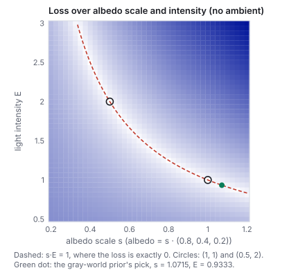
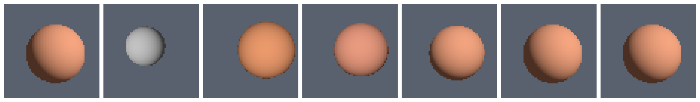
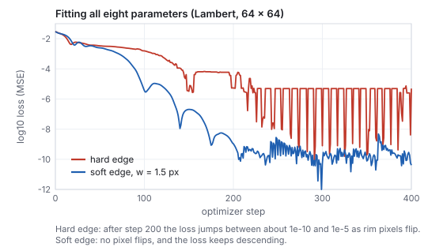
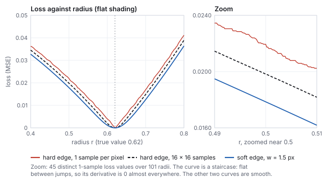
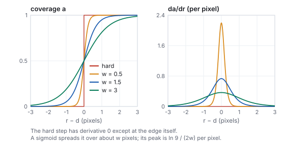

This chapter links to the course’s interactive demos and to original
papers on the open web, and it uses MathJax for its formulas. Read it
through the course website (or download the file and open it in a
browser); a Canvas inline preview will reach neither the demos nor the
math. All chapters.
Inverse and Differentiable Rendering
“All models are wrong, but some are useful.”
George Box, Robustness in the Strategy of Scientific Model Building, 1979
A renderer maps a scene’s parameters (shapes, materials, lights, camera) to an image. Inverse rendering asks for the parameters given the image. The modern answer is to make the renderer differentiable and descend the gradient of an image loss: render, compare with the photograph, push the error back through every pixel to every parameter, and repeat. Shading and lighting differentiate by the chain rule. Visibility does not: a pixel is inside an object or outside it, and the derivative of that step is zero almost everywhere, so a naive differentiable renderer cannot see an edge move. The four families of fixes (edge sampling, reparameterization, path-space boundary integrals, and soft rasterization) are the core of the field, and the systems built on them (Mitsuba 3 and Dr.Jit) recover materials, lights, geometry and volumes from photographs. Every worked number below comes from the course’s own 64 × 64 differentiable renderer, the engine of the inverse-render demo.
Every renderer in this text, the rasterizer of the rasterization chapter and the path tracer of the ray-tracing chapter alike, computes a function from numbers that describe a scene to numbers that describe an image.
Definition (the forward model)
Collect the scene’s parameters in a vector \(\theta \in \mathbb{R}^m\): vertex positions, albedos, roughnesses, light directions and intensities, camera pose. The renderer is a function \(R : \mathbb{R}^m \to \mathbb{R}^{3P}\) that returns the \(3P\) color values of a \(P\)-pixel image. Inverse rendering seeks \(\theta\) such that \(R(\theta)\) matches an observed image \(I^\ast\). Differentiable rendering computes the Jacobian \(\partial R / \partial \theta\), or, more usefully, the gradient of a scalar loss through it.
The course renderer has \(m = 8\): an RGB albedo \(\rho\), a light direction given by azimuth and elevation, \(\mathbf{l} = (\cos\phi_e \sin\phi_a,\ \sin\phi_e,\ \cos\phi_e\cos\phi_a)\), and a sphere’s radius \(r\) and center \((c_x, c_y)\), seen by an orthographic camera on a \(64 \times 64\) grid over \([-1,1]^2\). A pixel center at distance \(d\) from the center is covered when \(d < r\); there the normal is \(\mathbf{n} = (d_x, d_y, \sqrt{r^2 - d^2})/r\), and the color is
\[
P = a\,S + (1-a)\,B, \qquad S = \rho\,\big(k_a + E\max(0, \mathbf{n}\cdot\mathbf{l})\big),
\]
with coverage \(a \in \{0, 1\}\), background \(B = (0.10, 0.12, 0.16)\), ambient \(k_a = 0.08\) and light intensity \(E = 1\): the Lambert model of the illumination chapter on the ray–sphere geometry of the ray-tracing chapter. The output has \(3 \cdot 64^2 = 12{,}288\) numbers.
Definition (image loss)
The mean squared error \(L(\theta) = \frac{1}{3P}\sum_k \big(R_k(\theta) - I^\ast_k\big)^2\). Its gradient is \(\nabla L = \frac{2}{3P}\sum_k (R_k - I^\ast_k)\,\nabla R_k\): each pixel’s error weights that pixel’s sensitivity to the parameters.
2 · The inverse problem, and why it is ill-posed
Hadamard called a problem well-posed when a solution exists, is unique, and depends continuously on the data. Inverse rendering fails the second test routinely and the third often.
Worked example (albedo against intensity)
Turn off the ambient term. A sphere of albedo \((0.8, 0.4, 0.2)\) under a light of intensity \(E = 1\), and the same sphere at albedo \((0.4, 0.2, 0.1)\) under \(E = 2\), give images whose largest pixel difference is exactly 0: the Lambert term sees only the product \(\rho E\). The loss over the albedo scale \(s\) and the intensity \(E\) (figure below) is a valley along \(sE = 1\) on which every point fits perfectly. Restore \(k_a = 0.08\) and the two images differ, but only by a mean squared error of \(1.37\times10^{-4}\), less than the noise of most photographs.

Computed with the course renderer at 32 × 32, no ambient term, the light direction and sphere at their true values; albedo \(= s\cdot(0.8, 0.4, 0.2)\). The loss is exactly 0 along \(sE = 1\). The green dot is where a gray-world prior picks (Section 11).
The albedo–intensity product is the simplest of many such families. Shape and shading trade off (a darker patch is either darker paint or a surface turned away from the light); the bas-relief ambiguity lets a flattened shape under a moved light produce the same shaded image; a mirror reflects an environment that cannot be told apart from a texture painted on the mirror. Counting makes the point too: a 64 × 64 photograph gives 12,288 numbers, while a per-pixel albedo texture alone has 12,288 unknowns, a per-pixel depth another 4,096, and the light 3 more. Ramamoorthi and Hanrahan (2001) made the lighting case exact: for a convex Lambertian object, distant lighting can be recovered only up to its low spherical-harmonic frequencies, because the cosine kernel filters out the rest (the illumination chapter uses the same nine coefficients forward).
Consequence
Inverse rendering is solved by adding information: more views, known lights, a restricted scene representation, or a prior. Optimization finds a parameter vector that explains the images; which one it finds depends on the representation, the starting point and the regularizer.
3 · Analysis by synthesis
Analysis by synthesis means explaining an observation by generating candidates and adjusting them until they match. Blanz and Vetter (1999) fitted a morphable face model to a photograph this way, with hand-derived gradients of a rasterized face; Loper and Black (2014, OpenDR) made a general differentiable rasterizer by approximating the derivative of each pixel with image-space finite differences. The loop is the same in every system since:
The update is the gradient descent of the networks chapter, usually with Adam (same chapter) because parameters with different units (an albedo in [0, 1], an angle in radians, a radius) need different step sizes and Adam normalizes each by its own gradient history.
Worked example (fitting the sphere)
The hidden parameters are albedo \((0.85, 0.35, 0.20)\), light azimuth 0.70 and elevation 0.45, radius 0.62, center \((0.08, -0.06)\). The fit starts from a gray sphere, albedo \((0.5, 0.5, 0.5)\), light at \((-0.5, 0)\), radius 0.42, center \((-0.12, 0.10)\), and runs Adam with step 0.02 on all eight parameters:
step
0
10
50
100
200
300
loss, hard edge
0.0304
0.0156
0.00337
0.00157
5.4×10−6
8.0×10−10
loss, soft edge (Section 7)
0.0297
0.0185
0.00249
3.6×10−6
1.1×10−9
5.2×10−11
At step 25 the parameters read albedo \((0.768, 0.298, 0.139)\), light \((-0.028, 0.034)\), radius 0.605, center \((0.332, 0.023)\): the color is nearly right, and the sphere has overshot to the right, because a brighter right side can be explained either by the light moving right or by the sphere moving right, and both move at first. By step 100 the light has reached \((0.354, 0.418)\) and the center has come back to \((0.157, -0.041)\); by step 300 every parameter matches to three decimals.

Computed: the target, then the hard-edge fit at steps 0, 25, 50, 100, 200 and 300 (64 × 64 pixels each, shown at 3×, sRGB-encoded for display; the loss is computed on linear values).

Computed: the loss of the two fits. The hard-edge curve’s jumps after step 200 are rim pixels flipping between sphere and background; the smallest one-pixel flip costs \(1.74\times10^{-6}\) of loss, the size of the jumps.
4 · Automatic differentiation: forward and reverse
A renderer is a long composition of elementary operations. Automatic differentiation (AD) applies the chain rule to that composition exactly, operation by operation; it is neither symbolic differentiation (which builds an expression) nor finite differences (which perturb inputs and suffer truncation and rounding error). Wengert (1964) described the forward mode; Linnainmaa (1976) the reverse mode, which reached machine learning as backpropagation (Rumelhart, Hinton and Williams 1986). Baydin et al. (2018) survey both, and Griewank and Walther’s Evaluating Derivatives is the reference.
Definition (the two modes)
Write the computation as a sequence \(v_1, \dots, v_K\), each a simple function of earlier ones. Forward mode carries a tangent \(\dot v_k = \partial v_k / \partial \theta_j\) alongside each value, for one chosen input \(\theta_j\); one pass gives the derivative of every output with respect to that one input. Reverse mode runs the computation forward, records it (the tape), then carries an adjoint \(\bar v_k = \partial L / \partial v_k\) backward from the output, \(\bar v_i \mathrel{+}= \bar v_k\,\partial v_k/\partial v_i\); one backward pass gives the derivative of one output with respect to every input.
Worked example (one pixel, both modes)
Take \(L = (\rho \max(0, \mathbf{n}\cdot\mathbf{l}) - T)^2\) with \(\mathbf{n} = (0.6, 0, 0.8)\), \(\mathbf{l} = (\sin\phi, 0, \cos\phi)\), \(\rho = 0.5\), \(\phi = 0.3\), \(T = 0.7\). The forward values: \(u = \mathbf{n}\cdot\mathbf{l} = 0.6\sin 0.3 + 0.8\cos 0.3 = 0.9416\), \(s = \max(0,u) = 0.9416\), \(P = \rho s = 0.4708\), \(L = (0.4708 - 0.7)^2 = 0.05254\); and \(du/d\phi = 0.6\cos 0.3 - 0.8 \sin 0.3 = 0.3368\).
\(u\)
\(s\)
\(P\)
\(L\)
forward, seed \(\dot\rho = 1\)
0
0
\(s = 0.9416\)
\(2(P-T)\dot P = -0.4316\)
forward, seed \(\dot\phi = 1\)
0.3368
0.3368
\(\rho\dot s = 0.1684\)
\(-0.0772\)
Reverse: \(\bar L = 1\), \(\bar P = 2(P - T) = -0.4584\), then \(\bar\rho = \bar P s = -0.4316\) and \(\bar s = \bar P \rho = -0.2292\), \(\bar u = \bar s \cdot [u > 0] = -0.2292\), \(\bar\phi = \bar u \cdot du/d\phi = -0.0772\). Two forward passes or one reverse pass, same two numbers.
Cost
Forward mode costs one pass per input; reverse mode one forward and one backward pass per output, each a small constant multiple of the original computation, plus the memory of the tape. A loss is one output. The course renderer has 8 inputs, so forward mode would need 8 passes; a 512 × 512 RGB texture has 786,432 inputs, and only reverse mode is feasible. This is why every differentiable renderer, like every network trainer, runs in reverse mode.
The course renderer writes its reverse pass by hand: for each pixel it evaluates the color, then applies the chain rule backward through that pixel’s coverage, normal, Lambert and Blinn–Phong terms, accumulating eight adjoints. The function lossAndGrad in lib/core/inverse-render.js is about sixty lines; the test file checks every component against central finite differences (next section).
5 · Differentiating shading and lighting
Away from edges, a pixel’s color is a smooth function of the parameters, and its derivatives follow from the shading model of the illumination chapter:
The smooth derivatives
For \(S_c = \rho_c (k_a + E\,\max(0, \mathbf{n}\cdot\mathbf{l}))\) on a lit point (\(\mathbf{n}\cdot\mathbf{l} > 0\)):
\[
\frac{\partial S_c}{\partial \rho_c} = k_a + E\,\mathbf{n}\cdot\mathbf{l}, \qquad
\frac{\partial S_c}{\partial \mathbf{l}} = \rho_c E\, \mathbf{n}, \qquad
\frac{\partial S_c}{\partial \mathbf{n}} = \rho_c E\, \mathbf{l},
\]
then \(\partial \mathbf{l}/\partial\phi_a = (\cos\phi_e\cos\phi_a, 0, -\cos\phi_e\sin\phi_a)\) and, inside the disk, \(\partial \mathbf{n}/\partial r = (-d_x/r^2,\ -d_y/r^2,\ d^2/(z r^2))\) with \(z = \sqrt{r^2 - d^2}\). For the Blinn–Phong term \(k_s E (\mathbf{n}\cdot\mathbf{h})^p\) with \(\mathbf{h} = (\mathbf{l} + \mathbf{v})/\lVert \mathbf{l} + \mathbf{v}\rVert\), the derivative with respect to \(\mathbf{l}\) passes through the normalization: \(\partial \mathbf{h}/\partial \mathbf{l} = (I - \mathbf{h}\mathbf{h}^\top)/\lVert\mathbf{l} + \mathbf{v}\rVert\).
Worked example (one pixel at the start of the fit)
Pixel \((i, j) = (20, 28)\) has center \((-0.35938, 0.10938)\). With the starting center \((-0.12, 0.10)\) and radius 0.42 it lies at \(d = 0.2396\), so \(z = \sqrt{0.42^2 - 0.2396^2} = 0.3450\) and \(\mathbf{n} = (-0.5699, 0.0223, 0.8214)\). The starting light is \(\mathbf{l} = (-0.4794, 0, 0.8776)\) and \(\mathbf{n}\cdot\mathbf{l} = 0.9941\), so every channel renders \(0.5\,(0.08 + 0.9941) = 0.5370\). The target pixel is \((0.2004, 0.0825, 0.0471)\): darker, since the true light is on the other side. Then
\(\partial P/\partial\rho_c = 0.08 + 0.9941 = 1.0741\), so this pixel adds \(2(0.5370 - 0.2004) \cdot 1.0741 / 12{,}288 = 5.89\times10^{-5}\) to \(\partial L/\partial\rho_R\): lower the red albedo;
\(\partial(\mathbf{n}\cdot\mathbf{l})/\partial\phi_a = \mathbf{n}\cdot(0.8776, 0, 0.4794) = -0.1064\), and the three channels together add \((0.6733 + 0.9091 + 0.9798)\cdot 0.5 \cdot (-0.1064) / 12{,}288 = -1.11\times10^{-5}\) to \(\partial L/\partial\phi_a\): a negative derivative, so descent increases the azimuth, swinging the light toward its true side and darkening this pixel.
Worked example (the gradient check)
At a test point (albedo \((0.6, 0.4, 0.3)\), light \((0.2, 0.3)\), radius 0.55, center \((0.03, -0.02)\), 32 × 32, soft edge) the analytic gradient and central differences with \(h = 10^{-6}\) agree to five significant figures in all eight components, for example \(\partial L/\partial r = -0.033121\) and \(\partial L/\partial c_x = -0.048778\) under Lambert shading; the largest relative disagreement is \(1.4\times10^{-7}\) (Lambert) and \(1.2\times10^{-7}\) (Blinn–Phong). A gradient check of this kind belongs in every hand-written backward pass.
The \(\max(0, \cdot)\) is already a mild problem: its derivative jumps from 0 to 1 at the terminator, and a point in shadow passes no gradient to the light at all. A pixel that should be lit but is in the current shadow cannot pull the light toward itself; only lit pixels vote. Global effects add more of the same: a shadow’s edge, a reflection’s boundary and a refraction all move with the parameters, and each is a discontinuity in the integrand.
6 · The visibility discontinuity
A pixel’s true value is an integral of the scene’s radiance over the pixel’s area (the antialiasing chapter). When an edge crosses the pixel, the integrand is discontinuous, and the discontinuity moves with the parameters.
Differentiating an integral with a moving boundary
In one dimension, for \(I(\theta) = \int_0^1 f(x, \theta)\,dx\) where \(f\) jumps from \(f_{\text{in}}\) to \(f_{\text{out}}\) at \(x = t(\theta)\),
\[
\frac{dI}{d\theta} \;=\; \int_0^1 \frac{\partial f}{\partial \theta}\,dx \;+\; \big(f_{\text{in}} - f_{\text{out}}\big)\,\frac{dt}{d\theta}.
\]
The first term is the interior derivative; the second, the boundary term, is the Leibniz (in higher dimensions, Reynolds transport) contribution of the moving edge. In 2D the boundary term is an integral along the edges of the difference across each edge times the edge’s normal velocity.
Sampling a pixel at fixed points and differentiating each sample captures the interior term only. A sample is either on one side of the edge or the other; an infinitesimal change of \(\theta\) moves no sample across, so its derivative is the interior one, and the boundary term is lost. This is not a numerical accident: Monte Carlo estimators of the pixel integral differentiated sample by sample are biased estimators of its derivative.
Worked example (the radius of a flat disk)
Use flat shading (\(S = \rho\), no light), so the radius affects only the silhouette, and set every other parameter to its true value with the radius at 0.5 instead of 0.62. Three versions of the same loss:
pixel model
loss at \(r = 0.5\)
\(\partial L/\partial r\)
hard edge, 1 sample at each pixel center, analytic
0.02194
0 (central differences, \(h = 10^{-6}\): also 0)
hard edge, 16 × 16 samples, central differences (\(h = 10^{-3}\))
0.01982
−0.1635
soft edge, \(w = 1.5\) pixels, analytic
0.01785
−0.1650, all of it from the rim
The supersampled image approximates the pixel integral, and its derivative is what the hard renderer should report. The soft edge reports nearly the same number; the hard edge reports nothing.

Computed: the loss of the flat disk against its radius. On the full range the three curves look alike; the zoom shows the 1-sample curve as a staircase (45 distinct values over 101 radii between 0.49 and 0.51), flat between the radii at which a pixel center crosses the rim. Gradient descent on a staircase does not move.
Pitfall
Run the flat-disk fit with only the radius free, starting at 0.42, for 200 steps of Adam: with a hard edge the radius is still exactly 0.42 at the end, because every gradient was exactly zero. Nothing reports an error; the loss simply does not change. With Lambert shading the same experiment converges, because the interior of the disk carries radius information through the normal (\(\partial \mathbf{n}/\partial r \ne 0\)), which hides the problem until a flat or textured object, or a shape parameter that only moves an outline, appears. A related failure is explaining away: fit only the albedo and the light with the geometry stuck at its wrong starting values, and the fit settles at loss 0.0167 with the light at \((0.857, 0.152)\) instead of \((0.70, 0.45)\), bending the appearance to cover for the wrong shape. A low loss does not mean the right parameters.
7 · Four answers to the edge problem
Each family restores the boundary term in a different way.
Edge sampling (Li, Aittala, Durand and Lehtinen 2018)
Estimate the boundary integral directly: find the silhouette edges of the triangle mesh as seen from the camera (and, for secondary rays, from each shading point), sample points on them, and at each point evaluate the radiance on both sides; the contribution is the difference times the edge’s normal velocity \(dt/d\theta\). Combined with ordinary interior derivatives, the estimate is unbiased, for primary visibility and for shadows and indirect light. Its cost is finding and importance-sampling the silhouette edges, which for secondary rays requires a hierarchy over edges.
Reparameterization (Loubet, Holzschuch and Jakob 2019)
Change the integration variable so that the discontinuity stays put as \(\theta\) changes: rotate the small set of directions sampled around a pixel or a shading point so that they follow the moving silhouette, which turns the boundary term into an interior one. The transformation is estimated locally from a few auxiliary rays, so the method needs no explicit edges and works with any geometry, at the price of bias where the local estimate is poor. Bangaru, Li and Durand (2020) made the warp unbiased by deriving it from the divergence theorem (warped-area sampling).
Path-space differentiable rendering (Zhang, Miller, Yan, Gkioulekas and Zhao 2020)
Differentiate the path integral of light transport itself: write the derivative of the measurement as an interior path integral plus a boundary path integral over paths that touch a discontinuity, and estimate both with Monte Carlo, as a path tracer estimates the forward integral. This gives an unbiased, general formulation for global illumination, including discontinuities met deep in a path.
Soft rasterization (Kato, Ushiku and Harada 2018; Liu, Li, Chen and Li 2019)
Change the forward model so there is no discontinuity. The Neural 3D Mesh Renderer keeps the hard rasterizer forward and substitutes, in the backward pass, an approximate gradient obtained by linearly interpolating the pixel’s color as the edge sweeps across it. Soft Rasterizer replaces coverage by a probability, a sigmoid of the signed distance from the pixel to the triangle’s edge with a sharpness parameter, and aggregates the triangles along a pixel with a softmax over depth instead of a depth test. Every pixel near an edge then depends smoothly on the edge’s position. The cost is bias: the rendered image is blurred, and it matches a photograph only as the sharpness goes to infinity, where the gradients vanish again.
Worked example (a soft edge in the course renderer)
The course renderer’s soft mode sets \(a = \sigma((r - d)/s)\), with \(s = w / (2\ln 9)\) pixels so that the coverage rises from 0.1 to 0.9 over \(w\) pixels. At \(w = 1.5\):
\(r - d\) (pixels)
−1
−0.5
0
0.5
1
coverage \(a\)
0.0507
0.1877
0.5
0.8123
0.9493
Its derivative peaks at the edge at \(\ln 9 / (2w)\) per pixel: 2.197 at \(w = 0.5\), 0.732 at \(w = 1.5\), 0.366 at \(w = 3\). A narrow edge is sharp and gives a large gradient to few pixels; a wide one is blurry and gives a small gradient to many. Practical systems often anneal \(w\), wide at first for a broad basin of attraction and narrow at the end for an accurate image.

Computed: the coverage profiles and their radius derivatives. The hard step’s derivative is a spike of zero width, which point samples never land on.
Rasterization-based systems in production combine these ideas: nvdiffrast (Laine et al. 2020) keeps a hard, fast rasterizer and adds an analytic antialiasing pass whose derivative supplies the silhouette gradient, and PyTorch3D (Ravi et al. 2020) implements a soft rasterizer for meshes and point clouds.
8 · Differentiable path tracers
A naive reverse-mode differentiation of a path tracer must store every intermediate value of every path for the backward pass. Assume 50 stored floats per path vertex: a 512 × 512 image at 64 samples per pixel and 6 bounces records \(512^2 \cdot 64 \cdot 6 \cdot 50 \cdot 4\) bytes, 20.1 GB, for one gradient. The systems below exist to avoid that.
Mitsuba 2 and Mitsuba 3, Dr.Jit
Mitsuba 2 (Nimier-David, Vicini, Zeltner and Jakob 2019) is a renderer written once against generic numeric types and compiled into variants: scalar, vectorized, polarized, spectral, and differentiable. Dr.Jit (Jakob, Speierer, Roussel and Vicini 2022), the compiler under Mitsuba 3, traces the renderer’s computation into a graph, fuses it into large GPU kernels, and differentiates it in forward or reverse mode; the renderer’s loops are recorded symbolically, so a kernel does not grow with the number of bounces, and Mitsuba 3’s path tracers use the adjoint methods below so that reverse mode does not store every path.
Radiative backpropagation (Nimier-David, Speierer, Ruiz and Jakob 2020)
Treat the backward pass as a light-transport problem of its own: the image-space gradient \(\partial L/\partial I\) is emitted from the camera as an “adjoint radiance” and transported into the scene by paths, accumulating at each surface or volume parameter the product of adjoint and forward radiance. Memory is that of a forward render, independent of path length. Path replay backpropagation (Vicini, Speierer and Jakob 2021) makes the cost linear in path length by replaying each path with the same random numbers instead of re-estimating the forward radiance.
Monte Carlo adds a statistical problem. A gradient estimated from the same random samples as the forward value it multiplies is biased (the product of two correlated estimates is not the estimate of the product), so these systems decorrelate, using independent samples for the two factors. Zeltner et al. (2021) analyze the estimators and their variance; the practical rule is that a differentiable path tracer needs far fewer samples per iteration than a final render, because an optimizer averages noisy gradients over steps, but its estimators must be unbiased or the average converges to the wrong answer.
9 · What can be recovered
unknown
representation
typical method
typical difficulty
materials
BRDF parameters (albedo, roughness, metalness) per object, or textures
Geometry is the hardest case for a reason visible in the course renderer: raw vertex gradients are large near silhouettes and noisy, and a step that follows them moves vertices independently and tangles the mesh. Nicolet et al. precondition the step by \((I + \lambda L)^{-1}\) with \(L\) the mesh Laplacian (the meshes chapter), which spreads each vertex’s update over its neighbors and allows large, smooth steps.
10 · NeRF and splatting as inverse rendering
The learned scenes of the learned-scenes chapter are inverse rendering with a particular choice of representation and renderer, chosen so that the visibility problem does not arise.
NeRF renders by the volume integral, in which occlusion is a product of transmittances \(T_i = \prod_{j<i}(1-\alpha_j)\) and every quantity is a smooth function of the densities. There is no edge to sample: a surface is a steep but differentiable rise in density.
3D Gaussian splatting renders by sorted alpha blending of Gaussians, each with a smooth footprint. Coverage is the Gaussian’s value, a soft edge by construction; only the sort order is discrete, and it changes rarely enough that its gradient is ignored.
Both invert for radiance, not for materials and lights: the scene they recover reproduces the photographs from new viewpoints but bakes in the capture’s lighting, which is why they cannot be relit without a further decomposition (the relighting question of the generative-3D lecture). Physically based inverse rendering recovers the factors at the cost of the ambiguities of Section 2; learned scenes avoid the ambiguities by not factoring.
11 · Regularization and priors
Definition (regularized inverse rendering)
Minimize \(L(\theta) + \lambda\,\Omega(\theta)\), where \(\Omega\) penalizes implausible parameters: smoothness of a texture or a mesh (a Laplacian or total-variation term), a prior distribution on albedos, or a learned model of what scenes look like. From a Bayesian view \(L\) is the negative log-likelihood of the photograph and \(\Omega\) the negative log-prior; the minimizer is the maximum a posteriori estimate.
Worked example (a prior picks a point on the valley)
On the valley \(sE = 1\) of Section 2 the data term is zero, so the regularizer alone decides. A gray-world prior \(\Omega = (\bar\rho - 0.5)^2\), on the mean albedo \(\bar\rho = s \cdot (0.8 + 0.4 + 0.2)/3 = 0.4667\,s\), is minimized at \(s = 0.5/0.4667 = 1.071\), hence \(E = 0.933\) and albedo \((0.857, 0.429, 0.214)\): the green dot in the figure of Section 2. The answer is exactly as right as the prior.
Barron and Malik (2015) recovered shape, illumination and reflectance from a single image by combining many such hand-built priors (smooth shape, sparse reflectance changes, natural illumination). Learned priors replace the hand-built ones: a network trained on many scenes predicts parameters directly or initializes the optimization, and a diffusion model can act as the prior itself, scoring how plausible a rendered view looks. Score distillation (DreamFusion, Poole et al. 2022; the diffusion chapter) is this idea taken to its limit: no photograph at all, only the prior, pushed through a differentiable renderer.
12 · Open problems
Global-illumination gradients. Boundary terms from shadows, reflections and caustics deep in a path are expensive to find and high in variance; unbiased path-space estimators exist, but their cost per useful gradient is still far above that of a forward render.
Noise. Gradient variance slows optimization and correlated estimators bias it; how many samples to spend on the forward value against the gradient, and how to share them across iterations, is open.
Local minima. The loss of an image is not convex in geometry or light: a shape that must move further than its silhouette’s width sees no gradient pulling it there, and the explaining-away of Section 6 is a minimum the optimizer is content with. Coarse-to-fine schedules, wide soft edges at first, and learned initializations are the current remedies.
Real capture. A photograph is not a render: the camera has an unknown response curve, white balance, lens distortion, vignetting, motion blur and noise, and the scene has interreflections and lights outside the frame. Every one must be modeled or calibrated, or the optimizer absorbs it into the parameters.
Hands-on
From the offering’s webroot, run the gradient checks of the course renderer: node --test lib/tests/inverse-render.test.mjs. Expected, at the end: ℹ tests 10, ℹ pass 10, ℹ fail 0. The first six tests compare all eight analytic derivatives with central differences under flat, Lambert and Blinn–Phong shading, hard and soft edges.
Measure the silhouette gradient of Section 6 yourself (save as edge.mjs in the webroot):
import { TRUE_PARAMS, render, lossAndGrad } from './lib/core/inverse-render.js';
const p = TRUE_PARAMS.slice(); p[5] = 0.5;
for (const edge of ['hard', 'soft']) {
const o = { n: 64, edge, shading: 'flat', w: 1.5 };
const g = lossAndGrad(p, render(TRUE_PARAMS, o), o);
console.log(edge, 'loss', g.loss.toFixed(5), 'dL/dr', g.grad[5].toFixed(4));
}
Expected: hard loss 0.02194 dL/dr 0.0000 and soft loss 0.01785 dL/dr -0.1650.
Run the whole fit with a soft edge:
import { TRUE_PARAMS, START_PARAMS, render, makeFit } from './lib/core/inverse-render.js';
const o = { n: 64, edge: 'soft', shading: 'lambert', w: 1.5 };
const fit = makeFit({ start: START_PARAMS, target: render(TRUE_PARAMS, o), opts: o, free: Array(8).fill(true) });
for (let i = 1; i <= 300; i++) { const r = fit.step(); if (i % 100 === 0) console.log(i, r.loss.toExponential(2), fit.p.map((v) => v.toFixed(3)).join(' ')); }
Expected (the loss printed is the one measured before step i’s update):
In the inverse-render demo, choose flat, hard, optimize radius, and press play: the readout dL/dr rim, in shows 0, 0 and the radius stays at 0.42. Switch the edge to soft: the bottom-right panel lights up red along the rim and the radius walks to 0.62.
Jakob, Speierer, Roussel & Vicini, “Dr.Jit: a just-in-time compiler for differentiable rendering,” TOG, doi:10.1145/3528223.3530099
the compiler under Mitsuba 3
2022
Vicini, Speierer & Jakob, “Differentiable signed distance function rendering,” TOG, doi:10.1145/3528223.3530139
SDF geometry from images
2022
Munkberg et al., “Extracting triangular 3D models, materials, and lighting from images,” CVPR, arXiv:2111.12503
nvdiffrec
2022
Poole, Jain, Barron & Mildenhall, “DreamFusion,” arXiv:2209.14988
a diffusion model as the only prior
2023
Kerbl, Kopanas, Leimkühler & Drettakis, “3D Gaussian splatting for real-time radiance field rendering,” TOG, doi:10.1145/3592433
soft primitives, sorted blending
14 · Exercises
Exercise 1 (one pixel, the green channel)
For the pixel of Section 5, compute its contribution to \(\partial L/\partial\rho_G\). Which way does descent move the green albedo?
Solution
\(2(P_G - T_G) = 2(0.5370 - 0.0825) = 0.9091\); times \(\partial P/\partial\rho_G = 1.0741\), divided by 12,288: \(7.95\times10^{-5}\). Positive, so descent lowers the green albedo, toward the true 0.35.
Exercise 2 (choosing the mode)
A texture of 1024 × 1024 RGB texels is fitted to 20 photographs with one scalar loss. How many passes does forward mode need for one gradient, and how many does reverse mode need? What does reverse mode pay instead?
Solution
Forward mode: one pass per input, \(3 \cdot 1024^2 = 3{,}145{,}728\) passes. Reverse mode: one forward and one backward pass, because there is one output. It pays in memory: the tape of intermediate values from the forward pass (or, in radiative backpropagation, a second transport simulation instead of a tape).
Exercise 3 (the boundary term in one dimension)
A pixel covers \(x \in [0, 1]\); an object of value 0.8 covers \([0, t)\) and background 0.1 covers \([t, 1]\). Compute the pixel value \(I(t)\) and \(dI/dt\). Then sample the pixel at its center only and compute the derivative of that sample with respect to \(t\) at \(t = 0.3\).
Solution
\(I(t) = 0.8t + 0.1(1 - t) = 0.1 + 0.7t\), so \(dI/dt = 0.7 = f_{\text{in}} - f_{\text{out}}\): all boundary term, since \(\partial f/\partial t = 0\) away from the edge. The center sample at \(x = 0.5\) reads 0.1 for every \(t\) near 0.3, so its derivative is 0. The sample changes only when \(t\) crosses 0.5, by a jump of 0.7, which no derivative sees.
Exercise 4 (a soft edge by hand)
With \(w = 1.5\) pixels, compute the coverage and \(da/dr\) (per pixel) of a pixel whose center is half a pixel inside the rim.
Solution
\(s = 1.5/(2\ln 9) = 0.3413\) pixels, \(a = \sigma(0.5/0.3413) = \sigma(1.4648) = 0.8123\). \(da/dr = a(1-a)/s = 0.8123 \cdot 0.1877 / 0.3413 = 0.4467\) per pixel, against the peak 0.732 at the rim itself.
Exercise 5 (what the ambient term changes)
Show that without ambient light the image depends on \(\rho\) and \(E\) only through \(\rho E\), and explain why the ambient term of the course renderer breaks the tie. Why is this no help with a real photograph?
Solution
With \(k_a = 0\), \(S = \rho E \max(0, \mathbf{n}\cdot\mathbf{l})\), a function of the product. With \(k_a > 0\), \(S = \rho k_a + \rho E \max(0,\cdot)\): the shadowed side reads \(\rho k_a\) alone, which fixes \(\rho\) if \(k_a\) is known. In a photograph the ambient light is itself an unknown (it is the rest of the environment), so it is one more factor multiplying \(\rho\), and the tie returns.
Exercise 6 (the tape)
Under the assumption of Section 8 (50 floats of 4 bytes stored per path vertex), how much memory does a naive reverse-mode gradient of a 1024 × 1024 render at 16 samples per pixel and 4 bounces need?
Solution
\(1024^2 \cdot 16 \cdot 4 \cdot 50 \cdot 4 = 13{,}421{,}772{,}800\) bytes, 13.4 GB, more than many GPUs hold, for one gradient. Radiative backpropagation needs the memory of a forward render.
Exercise 7 (a different prior)
Repeat the worked example of Section 11 with a prior mean albedo of 0.6. Which scale, intensity and albedo does the regularized fit return?
Solution
\(s = 0.6/0.4667 = 1.286\), \(E = 1/s = 0.778\), albedo \((1.029, 0.514, 0.257)\). The red albedo exceeds 1, which is physically impossible; a box constraint \(\rho \le 1\) (the course optimizer clamps albedos to [0, 1]) would stop at \(s = 1.25\), \(E = 0.8\). Priors and constraints interact.
Exercise 8 (why only lit pixels vote)
In the course renderer, a pixel whose current \(\mathbf{n}\cdot\mathbf{l}\) is negative but whose target is bright contributes what to \(\partial L/\partial\phi_a\)? What does that imply for a fit that starts with the light on the wrong side?
Solution
Nothing: the derivative of \(\max(0, u)\) at \(u < 0\) is 0, so the pixel passes no gradient to the light, however large its error. The light is pulled only by pixels that are lit now. A fit starting with the light behind the object sees a thin lit crescent and moves slowly or not at all; the albedo, which still receives the ambient term’s gradient, may darken to compensate. Coarse-to-fine schedules and multiple starts address this.
Exercise 9 (code: the supersampled derivative)
Using lib/core/inverse-render.js, render the flat disk with a hard edge at 16 × 16 samples per pixel (spp: 16) and estimate \(\partial L/\partial r\) at \(r = 0.5\) by central differences with \(h = 10^{-3}\). Compare with the soft edge’s analytic value. Then try \(h = 10^{-6}\) and explain the result.
Solution
import { TRUE_PARAMS, render, mse } from './lib/core/inverse-render.js';
const o = { n: 64, edge: 'hard', shading: 'flat', spp: 16 };
const T = render(TRUE_PARAMS, o);
const at = (r) => { const p = TRUE_PARAMS.slice(); p[5] = r; return mse(render(p, o), T); };
for (const h of [1e-3, 1e-6]) console.log(h, ((at(0.5 + h) - at(0.5 - h)) / (2 * h)).toFixed(4));
At \(h = 10^{-3}\) the estimate is \(-0.1635\), against the soft edge’s \(-0.1650\). At \(h = 10^{-6}\) it reads \(-0.1069\); at \(2\times10^{-6}\), \(-0.0534\); at \(5\times10^{-7}\), 0. The perturbation moves the rim by far less than the subsample spacing (1/16 of a pixel is \(1.95\times10^{-3}\)), so it crosses one subsample, or two, or none, and the quotient is the size of those few jumps divided by \(2h\), not a derivative. Supersampling only pushes the staircase to a finer scale; the step must be larger than the subsample spacing for the quotient to mean anything.
Exercise 10 (demo: the plateau)
In the inverse-render demo, run the default fit (Lambert, hard edge, all parameters) to step 400 and watch the loss plot after step 200. Then switch the edge to soft and run again. Explain the difference with the one-pixel loss of Section 3.
Solution
With the hard edge the loss falls to the \(10^{-5}\) range by step 200 and then jumps between about \(10^{-10}\) and \(10^{-5}\): the parameters are within a fraction of a pixel of the truth, and each tiny step flips one or a few rim pixels between sphere and background. The smallest such flip costs \(1.74\times10^{-6}\) of loss, the height of the smallest jumps. The soft edge has no flips; the loss keeps descending smoothly to about \(10^{-10}\).